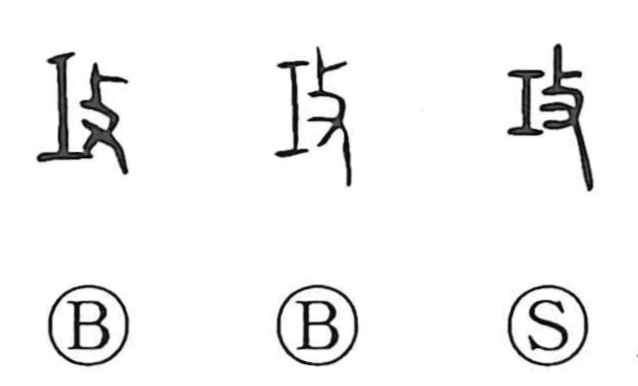

攻

Kun: semeru, osameru | On: kou
to attack ・ to master ・ handiwork
Explanation
A compound of 工, the craftsman’s tool, and 攴, the act of striking, this character originally evoked applying a tool by striking—doing handiwork, making utensils, and by extension mastering a craft. The Zhou Rites’ Kao Gong Ji records such uses in occupational names like 攻木 for woodworkers and 攻金 for metalworkers, designating those engaged in manufacturing wood and metal goods. The graph was also adopted in military contexts, as in 戎攻 for preparations and operations of war, from which its later and now primary sense, to attack and open hostilities, arose.